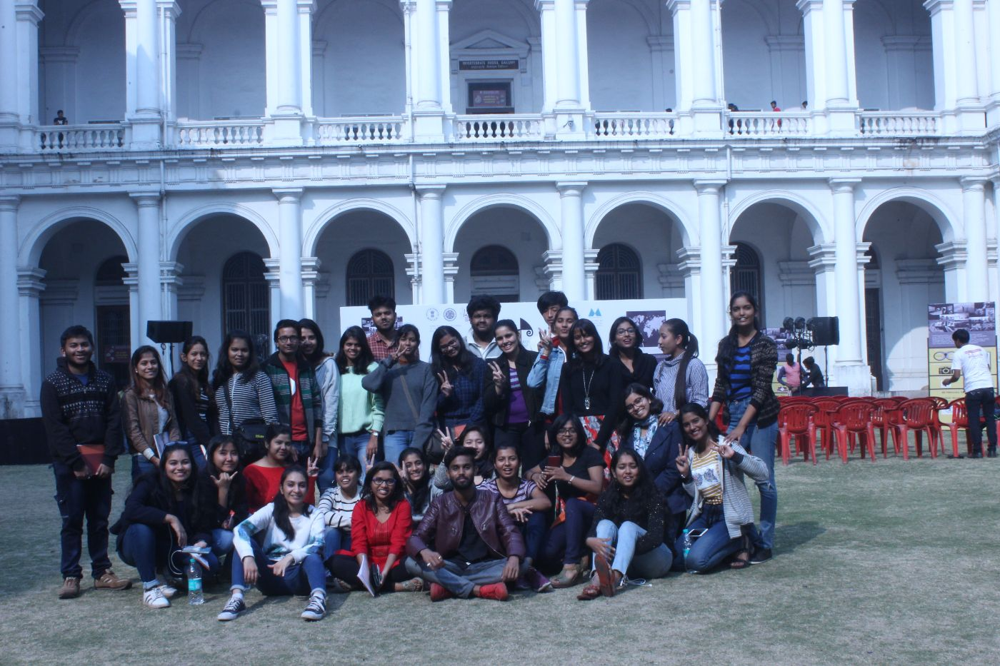
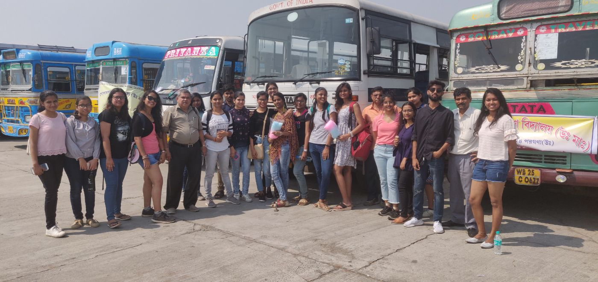
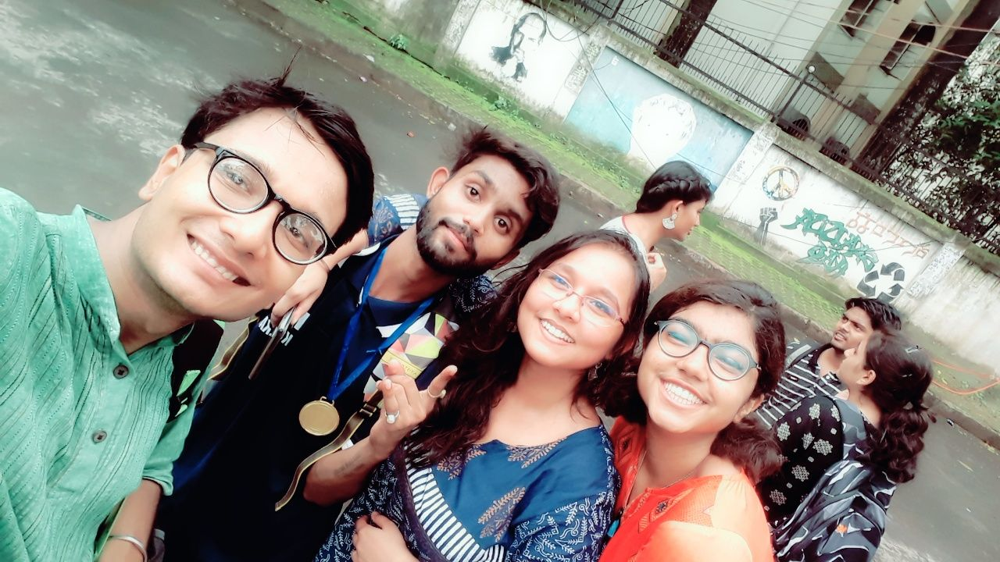
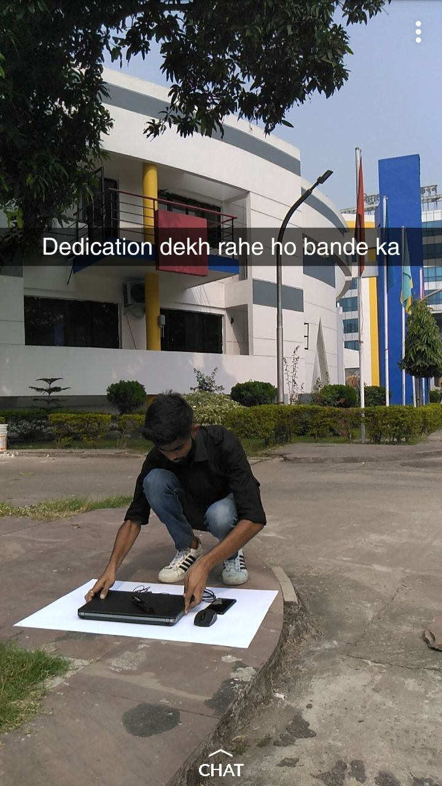
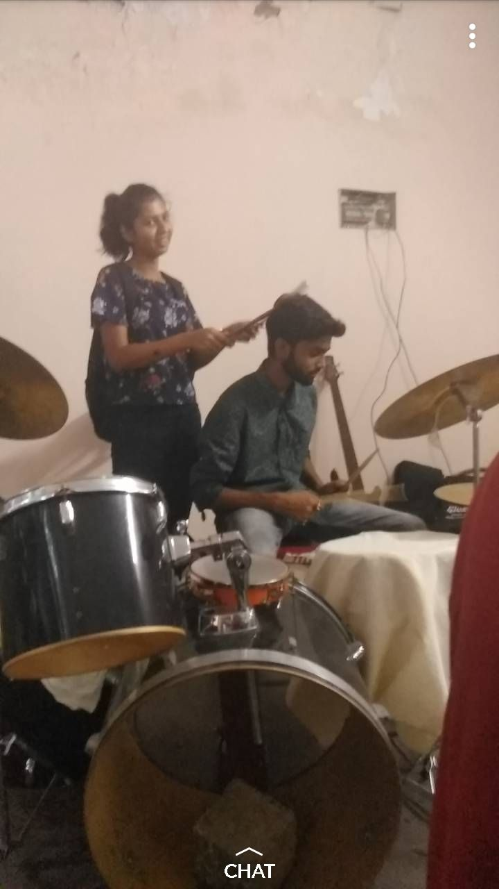
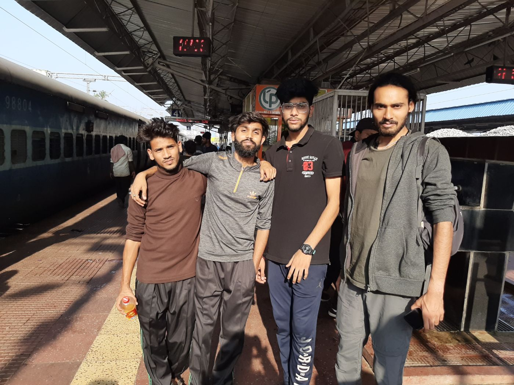

Origin file · NIFT Kolkata
Four years
in Kolkata.
Before the design systems and the driver apps, there was a B.Des at NIFT Kolkata — four years of all-nighters, jury panic, fashion shows, far too much chai, and the city that quietly taught me what design is actually for. A scrapbook from where it all started.
The reel
Six frames from the roll.
Developed · 06






Unofficial transcript
Four years, roughly counted.
Stats · not to scale
04Years on campus
& zero regrets
& zero regrets
1,460+Days of design,
deadlines & dosa
deadlines & dosa
∞Cups of chai
survived on
survived on
3AMThe hour every
submission was due
submission was due
End of file
Kolkata made the designer.
The rest is portfolio.
The all-nighters paid off — here’s what they turned into.